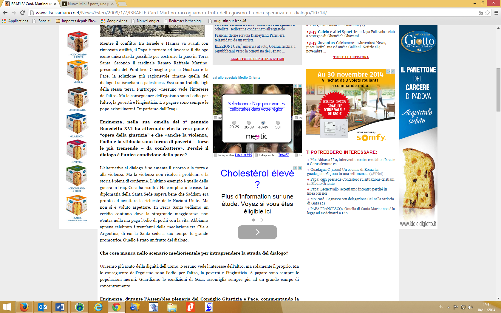

Extrait de La pierre rejetée par les bâtisseurs. L’«intrication» prophétique des Écritures, éditions Tsofim, Limoges, 2012; chapitre 25, consultable en ligne sur Pressbooks.
L’idéologie qui guide les chrétiens détracteurs d’Israël est le «palestinisme». J’ai forgé, il y a des années, ce néologisme, pour distinguer ce parti pris idéologique, de la sympathie envers le peuple palestinien, ou même du préjugé favorable à son égard, l’une et l’autre étant tout à fait légitimes. Le «palestinisme» dont je parle est d’une autre nature. Partisan, il participe de l’inclination compassionnelle, très marquée dans le christianisme contemporain, pour les pauvres et les opprimés. Comme toutes les attitudes de ce type, il se caractérise par une empathie fervente envers ceux qui sont considérés comme des «victimes». Un tel sentiment serait somme toute acceptable s’il ne se doublait d’une antipathie, au moins aussi ardente, pour le peuple considéré comme responsable, voire coupable de la «détresse» des Palestiniens: Israël, bien entendu. Comme tous les «compassionnels», les «palestinistes» intériorisent sans discernement le «narratif» favorable à la «victime» palestinienne, mieux (ou, plutôt, pire), ils ne veulent entendre aucune version qui jetterait ne serait-ce que l’ombre d’un doute sur la vérité absolue des faits allégués par les Palestiniens et de leur interprétation par la propagande pro-palestinienne. Et il va sans dire qu’ils rejettent avec scandale les démentis et les réfutations – même étayés par des arguments et des preuves difficilement contestables – émanant des instances politiques et militaires de l’État d’Israël. Il faut avoir fréquenté longtemps ces «apôtres» chrétiens d’un nouveau genre, pour constater qu’aucun argument, fût- il sage ou humble à souhait, n’est en mesure d’atteindre la «bonne conscience» et le cœur de ces «militants», murés sous la carapace de leurs certitudes. Ici, point de dialogue, ni même de discussion. On est en pleine guerre. Les «Territoires» – disputés entre les Israéliens et les Palestiniens, particulièrement la Cisjordanie et Jérusalem-est – sont l’objet de cette moderne croisade chrétienne. Pour ces disciples du Christ à la fibre «droit-de-l’hommiste» beaucoup plus développée que celle de leur foi religieuse, Israël est l’occupant brutal auquel il faut arracher, au besoin par la force, ce qu’il a conquis indûment par les armes (Guerre d’Indépendance, en 1948, et des Six-Jours, en 1967), censé appartenir à la «Palestine historique» avec tous les lieux saints (juifs, chrétiens et arabes) qui s’y trouvent. Et qu’on n’aille surtout pas imaginer que les militants de cette cause constituent un «petit reste» humble et persécuté défendant héroïquement une cause minoritaire et méprisée. Tout du contraire: la cause palestinienne est "tendance", et chérie de l’Occident depuis plusieurs décennies. De plus, elle est aujourd’hui promue, soutenue et financée par les instances les plus hautes des Nations Unies et de la Communauté européenne, et par une nuée d’Organisations non gouvernementales (ONG) 1.
Depuis un peu plus d’une décennie, cette propagande pro-palestinienne chrétienne est passée à la vitesse supérieure et est dorénavant relayée par la presse. Ci-après, un bref florilège de cette littérature de combat, violemment anti-israélienne. – Le 14 décembre 2000, paraissait, dans la revue palestinienne, Intifada, une caricature représentant la Palestine sous les traits d’une jeune femme crucifiée, le flanc transpercé par une immense flèche dont la pointe affiche l’étoile de David, et l’empennage, le drapeau américain; au pied de la croix, se tiennent trois juifs bedonnants, affligés d’un nez caricatural, et la mine réjouie sous la pluie de sang, jaillie du corps de la victime. Elle illustre la « prière » délirante et blasphématoire suivante 2:
Mon Seigneur, le Trahi, Ô mon rayonnant maître, qui fus trahi par le méprisable baiser de trahison [juifs = Judas], descends vers nous des tours du ciel, et demande au Suprême Glorieux d’abaisser son regard sur nous […] Qu’il fasse seulement que notre jeunesse entre maintenant par la Porte de Damas [dans la Vieille Ville de Jérusalem], en chantant leurs psaumes et en parcourant la Via Dolorosa [trajet emprunté par Jésus vers le lieu de son supplice]. Mais ils ne tendront pas l’autre joue [contrairement à l'enseignement de Jésus, cf. Mt 5, 39; Lc 6, 29]; au contraire, ils arracheront la croix de leur dos et jetteront à terre leurs couronnes d’épines [contrairement à Jésus, cf. Mt 27, 29]. Ils lèveront les yeux au ciel qui loue [leur Créateur] pour la gloire du liquide du cœur [de Jésus, cf. Jn 19, 34] qui lave la Via Dolorosa de la poussière des soldats [israéliens] qui marchent seuls vers le Golgotha [lieu de la crucifixion au sommet de la colline du Temple]. Alors s’élèveront de chaque ruelle les voix de la foule des vivants et les colombes et les cloches […] Ô Fils de la Vierge, ils ne peuvent triompher de vous deux fois. Va [viens?] lentement, Toi, dans l’humilité sans lumière, et puissent les anges te défendre.
– Le 16 juillet 2000 à la Maison d’Abraham, sur le Mont des Oliviers, Mgr Michel Sabbah, patriarche latin de Jérusalem, prononça une homélie qui fut retransmise sur la chaîne de télévision française A2 (aujourd’hui France 2), au cours de l’émission religieuse «Le Jour du Seigneur». Il y faisait un parallèle de mauvais goût entre un épisode biblique et «l’occupation militaire israélienne», non sans insister lourdement sur la non-conversion des juifs à la foi en Jésus. Extrait:
Frères et sœurs. Dans la première lecture de la prophétie d’Amos, prophète du huitième siècle avant le Christ, durant le règne de Jéroboam II, le prêtre du sanctuaire de Béthel, prêtre du roi, irrité par la prédication du prophète, le chasse loin de son sanctuaire. Béthel est aujourd’hui le quartier général de l’occupation militaire israélienne […] Dans la troisième lecture, de l’évangile selon saint Marc (6, 7-12), les disciples sont envoyés par le Seigneur afin de prêcher la pénitence au peuple. Ici aussi, Jésus prévoit le refus, malgré lequel le disciple devra persévérer […] Frères et sœurs, l’Église de Jérusalem porte en elle-même, dans son histoire passée et présente, le mystère de la grâce accueillie ou refusée. Ici, le Christ, il y a 2000 ans, fut refusé. Aujourd’hui accueilli dans tant de pays et par tant de peuples, il reste refusé dans sa terre […] Les ambitions politiques doivent se soumettre à la voix des prophètes: le prêtre du roi à Béthel chassa le prophète Amos. Le roi et son prêtre disparurent et la voix du prophète n’a cessé, aujourd’hui encore, de nous faire parvenir la voix de Dieu […] 3.
– Parfois, des ecclésiastiques vont jusqu’à blasphémer non seulement les juifs, mais les Écritures elles-mêmes. Témoin cet extrait d’un article d’Albert Longchamp, jésuite suisse:
En Israël, le juif « religieux » est orgueilleux et violent; le juif « non religieux » est arrogant et hautain. Il ne méprise pas seulement le Palestinien, il tient le chrétien pour un minable […] Comble de malheur, c’est la religion qui sert de base à un système aussi vicieux. Lorsque nous, chrétiens, nous prions bravement les psaumes, nous rendons un service « politique » aux plus durs représentants du sionisme triomphant à Jérusalem. Un exemple, tiré du psaume 9 [v. 4]: «Mes ennemis retournent en arrière, ils fléchissent, ils périssent devant Ta face». Magnifique, n’est- ce pas? Une véritable prophétie sur la Guerre des Six-Jours, en juin 1967, brillamment remportée par Israël sur les troupes égyptiennes, sans doute avec la bénédiction du Seigneur. «Tu as maté les païens, fait périr l’impie, effacé leur nom pour toujours et à jamais; l’ennemi est achevé, ruines sans fin, tu as renversé les villes, et leur souvenir a péri» [Ps 9, 6]. Encore une prophétie! Qui permet à vous, chrétiens de Suisse, d’ignorer qu’Israël en toute impunité a rayé de la carte de la Palestine, depuis 1948, plus de 400 villages arabes. J’ai bien dit: rayé, rasé, brûlé, détruit jusqu’à la racine. Leurs habitants sont devenus des réfugiés errant encore entre la Syrie, le Liban, la Jordanie et les Territoires autonomes, dans l’attente d’un improbable retour sur leurs champs. Tant de misère, toute cette injustice, «par la grâce du Seigneur»! Il y a des prières devenues imprononçables.
Elles m’arrachent la langue, elles ont un goût de sang, elles insultent ma foi, elles sont une offense à Dieu 4[4].
– Lisons encore cet extrait d’une homélie de Naïm Ateek, prêtre anglican, adepte de la Théologie (palestinienne) de la Libération:
Alors que nous approchons de la Semaine Sainte et de Pâques, la souffrance de Jésus-Christ aux mains de puissances politiques et religieuses malfaisantes, il y a deux mille ans, se manifeste à nouveau en Palestine. Le nombre de Palestiniens et d’Israéliens innocents qui ont été victimes de la politique de l’État d’Israël augmente. Ici, en Palestine, Jésus marche encore sur la Via Dolorosa. Jésus est le Palestinien impuissant, humilié à un point de contrôle, la femme tentant d’arriver à l’hôpital pour recevoir des soins, le jeune homme dont la dignité est piétinée, le jeune étudiant incapable d’atteindre l’université pour étudier, le père sans emploi qui doit trouver du pain pour nourrir sa famille; la liste devient tragiquement plus longue, et Jésus est là, au milieu d’eux, souffrant avec eux. Il est avec eux quand leurs maisons sont bombardées par des chars et des hélicoptères de combat. Il est avec eux dans leurs villes et leurs villages, dans leurs douleurs et leurs chagrins. Dans cette période de Carême, il semble à bon nombre d’entre nous que Jésus est encore sur la croix avec des milliers de Palestiniens crucifiés autour de lui. Il faut seulement des gens dotés de discernement pour voir les centaines de milliers de croix dans tout le pays, les Palestiniens, hommes, femmes et enfants crucifiés. La Palestine est devenue un énorme Golgotha. Le programme crucificatoire [sic] du gouvernement israélien fonctionne quotidiennement. La Palestine est devenue le lieu du crâne 5.
– En novembre 2008, lors de la Soixante-troisième session de l’Assemblée Générale de l’ONU, qu’il présidait, un autre ecclésiastique, le prêtre nicaraguayen Miguel d’Escoto Brockmann, se scandalisait de ce que l’on continue d’insister sur la patience, alors que nos frères et nos sœurs sont crucifiés.
Il pressait même les Nations Unies d’employer le terme “apartheid” pour qualifier les mesures politiques israéliennes dans les territoires palestiniens occupés 6.
– Sous le titre «Bethléem, une prison en territoire occupé», une revue catholique belge brosse un tableau apocalyptique de la situation de cette ville, en insistant sur le fait que les «exactions» de l’«occupant» sont la cause de la dépopulation. Extraits:
Privés d’eau, de terres et de moyens de subsistance, les Palestiniens de Bethléem étouffent derrière les murs qu’Israël persiste à ériger en toute illégalité. Tandis que sur les collines avoisinantes, de nouvelles colonies juives continuent de restreindre leur territoire. Les chrétiens en sont réduits à quitter la cité natale du Christ. Bethléem n’est normalement qu’à 20 minutes de Jérusalem mais il faut franchir plusieurs points de contrôle pour y arriver. Des murs infranchissables enserrent insolemment les quartiers de la ville, au prix de destructions, brisant bien plus que la vue, la vie des personnes, des familles et de la société tout entière […] Au centre-ville, la basilique de la Nativité est déserte, tout comme les magasins, restaurants ou hôtels, destinés aux pèlerins. Peu attirant de pénétrer dans un ghetto! […] 7.
Et de citer une certaine Leila Sansour, «chrétienne d’origine palestinienne», rentrée au pays:
…Si cela continue, la chrétienté pourrait disparaître du berceau où elle est née. Non pas pour des questions religieuses – hormis quelques cas isolés -, puisque nous avons vécu pendant des siècles en bonne entente avec les Palestiniens […] Une religieuse âgée s’exclame, de guerre lasse: «Avec le mur, qui peut franchir – à temps –, les check-points [points de contrôle] pour venir à l’hôpital, assister aux enterrements ou aux mariages ou tout simplement vendre sa récolte? Aux points de passage, des femmes enceintes ont dû accoucher, des enfants comme des adultes, dont l’état de santé nécessitait des soins urgents, sont morts parce que les militaires israéliens les ont délibérément fait attendre. Les punitions collectives, l’homme humilié, enfermé, c’en est trop! En été, sous la canicule, nous sommes privés d’eau car elle est pompée ici pour alimenter les colonies de l’occupant. Nous devons nous contenter de nos citernes sur les toits. Nous sommes des sans-papiers: il faut sans cesse renouveler les documents.» Découragée de voir l’une de leurs sœurs refoulée à un point de contrôle après 30 ans de résidence sur le territoire, et embarquée manu militari, la nuit tombée, dans un bus vers un pays voisin, la religieuse a écrit le 6 mars dernier au délégué apostolique de Jérusalem: «Israël, avec sa toute puissance d’aujourd’hui, mais également avec sa population au passé tragique, perdrait-il toutes ses valeurs relatives au respect et à la dignité de l’homme? Si cet État ne souhaite plus la présence de religieuses chrétiennes en Terre Sainte, qu’il le fasse publiquement et correctement savoir, mais qu’il cesse immédiatement ces traitements humiliants et non conformes aux droits de la personne.»
– La symbolique religieuse est mise au service de cette propagande. Particulièrement récurrent est le thème des Palestiniens comparés à la «Sainte Famille» sous occupation romaine, et ce ad nauseam8. Extraits. Sous un titre sans équivoque, Johann Hari raconte «la souffrance de femmes enceintes en Cisjordanie, où des bébés meurent sans explication valable»:
Dans deux jours, un tiers de l’humanité s’assemblera pour célébrer les douleurs de l’enfantement d’une réfugiée palestinienne à Bethléem, mais deux millénaires plus tard, dans une autre célèbre étable jonchée de décombres et sous blocus, une autre mère se retient de crier. Fadia Jemal est une femme de 27 ans aux dents espacées, arborant un sourire las et faible. «Qu’arriverait-il à la Vierge Marie si elle venait à Bethléem aujourd’hui? Elle endurerait ce que j’endure».
Le journaliste recueille ensuite les confidences du Dr Hamdan Hamdan, directeur des services de la maternité de l’hôpital Hussein, de Bethléem, qui affirme que les femmes palestiniennes ont accouché dans des conditions étonnamment similaires à celles qu’a endurées Marie, il y a 2000 ans. Elles ont mis au monde leur bébé sans médecin, sans équipement de stérilisation, sans aide en cas de complications. Elles ont été boycottées et ramenées à l’Âge de la pierre. Dans sa relation du voyage dans la région de Salfit de ce médecin palestinien avec une des équipes volantes de Merlin, l’une des trois associations de bienfaisance financées par l’Independent Christian Appeal, le journaliste décrit la détresse de ces femmes en ces termes: Tous les problèmes qui affectent ces Marie du XXIe siècle défilent dans la clinique de Merlin. L’une après l’autre, des mères terrorisées se présentent aux spécialistes, ici, et s’en vont en étreignant des sachets d’acide folique, de calcium, de fer et de médicaments 9.
– Le 7 janvier 2009, le cardinal Renato Martino, président du Conseil pontifical Justice et Paix, déclarait:
Regardons les conditions de vie à Gaza: cela ressemble de plus en plus à un grand camp de concentration 10.
Et le prélat catholique de marteler dans les colonnes de La Repubblica:
Je demande qu’on regarde les conditions de vie des personnes qui vivent là-bas. Entourées par un mur qu’il est difficile de franchir. Dans des conditions contraires à la dignité humaine. Ce qui se passe ces jours-ci fait horreur 11.
L’allusion à un «camp de concentration» n’est pas innocente; elle est même perverse quand on sait ce qu’elle évoque pour les descendants des millions de juifs qui ont péri de manière abominable dans les camps nazis. Le signal est devenu classique: les descendants des victimes des horreurs concentrationnaires infligent à d’autres innocents les tourments qu’on leur a fait endurer, c’est la thématique fertile de la victime qui devient bourreau.

– Voici comment s’exprimait, dans un rapport d’août 2009, Samuel Kobia, secrétaire général sortant du Conseil Œcuménique des Églises (COE), à propos d’Israël:
[…] L’occupation, associée à l’humiliation de tout un peuple pendant plus de six décennies, n’est pas simplement un crime économique et politique: tout comme l’antisémitisme, c’est un péché contre Dieu! Pour bien comprendre la gravité de la construction actuelle de colonies israéliennes dans les Territoires palestiniens occupés (TPO), il faut considérer cette situation dans le contexte historique plus large des soulèvements ethniques en Palestine qui ont précédé la création de l’État moderne d’Israël. Les Israéliens appellent cela «la guerre d’indépendance» mais, pour les Palestiniens, cette période sera, à tout jamais, la nakba – la «catastrophe» – dont beaucoup se souviennent comme [d']une forme de «purification ethnique» au cours de laquelle a eu lieu la plus importante migration forcée de l’histoire moderne… Ce que des dirigeants palestiniens appelaient, en 1948, «le racisme et la ghettoïsation des Palestiniens à Haïfa», est devenu, en ce début du 21e siècle, en Cisjordanie, à Jérusalem-Est et à Gaza, un système complet d’apartheid avec son propre système de «bantoustans» 12.
– On sait la fortune du terme «apartheid», ridiculement mais mortellement appliqué à Israël, parce qu’il a «osé» mettre une barrière de sécurité entre ses citoyens et les terroristes qui menacent leur vie. Ce que l’on sait moins, c’est que, dès 2003, le cardinal Roger Etchegaray – pourtant favorable au rapprochement entre l’Église et le peuple juif – l’avait déjà repris à son compte, dans une déclaration prononcée à Jérusalem, à l’occasion d’une ordination épiscopale:
Dans tout le pays une barrière de séparation déjà longue de 150 km dessine inexorablement une géographie d’apartheid qui excite plus qu’elle ne maîtrise la violence, lacérant un tissu humain avec de graves conséquences sociales, économiques, éducatives et sanitaires 13.
– Enfin, il faut déplorer que, lors de son départ de Terre Sainte le 13 mai 2009, le Pape Benoît XVI lui-même ait cédé à ce comparatisme religieux de mauvais goût, dont le moins qu’on puisse en dire est qu’il témoigne d’une ignorance affligeante de la douloureuse cicatrice mémorielle laissée dans la conscience juive par l’antijudaïsme multiséculaire de l’Église. Qu’on en juge:
Avec angoisse, j’ai été le témoin de la situation des réfugiés qui, comme la Sainte Famille, ont été obligés de fuir de leurs maisons […] 14.
Pour percevoir le caractère dévastateur de cette analogie, il faut connaître le contexte de l’événement auquel fait allusion le pape. Il s’agit du bref récit de la fuite de la «Sainte Famille», que relate l’Évangile:
[…] l’Ange du Seigneur apparaît en songe à Joseph et lui dit: «Lève-toi, prends avec toi l’enfant et sa mère, et fuis en Égypte; et restes-y jusqu’à ce que je te le dise. Car Hérode va rechercher l’enfant pour le faire périr.» (Mt 2, 13).
Message subliminal: Israël est, d’une certaine manière, Héroderedivivus. Ce n’est sans doute pas ce qu’a voulu dire le pape, mais c’est certainement ce qu’auront compris les chrétiens palestiniens. Et on imagine sans peine la version «palestino-chrétienne» de l’accusation de déicide, que tant d’enfants juifs ont entendue dans les écoles, surtout pendant la Seconde Guerre mondiale. Ce pourrait être quelque chose comme: Vous avez voulu tuer notre peuple, comme Hérode, c’est pour ça que nos parents ont fui, et vous en avez profité pour détruire nos villages et vous emparer de nos maisons. En fait, la seconde partie de l’exclamation est déjà monnaie courante depuis longtemps. Mais l’assimilation (implicite), par le chef de l’Église catholique, de l’armée de Défense d’Israël à Hérode, c’est l’inouï, la sacralisation inespérée de l’exécration palestinienne pour «l’Occupation». On ne s’étonnera donc pas de l’amertume de certaines réactions, dont la mienne 15.
© Menahem Macina
1 Les fameuses «ONG». Sur cette problématique, je recommande tout particulièrement la lecture de l’article de G. M. Steinberg, «Les ONG sont en guerre avec Israël»; malgré sa date relativement ancienne (2004), il est toujours d’actualité et incontournable. Voir aussi, du même auteur, «De l’abus du terme “Apartheid” en faveur de la cause palestinienne»; «L’observatoire des ONG», de NGO-Monitor; «Utilisation des ONG pour diaboliser Israël: l’exemple de P. Galand»; Michael Radu, « L’abus de la cause des droits de l’homme»; «L’argent de Ford finançait la haine antisémite et anti-israélienne»; David Bedein (interview), «Pourquoi les Palestiniens gagnent-ils la guerre des médias?»; etc. ↩
2 Cf. Menahem Macina, «La diffamation publique chrétienne d’Israël, une nouvelle forme de haine antijuive». ↩
3 «Mgr Sabbah s’identifie au prophète qui brava Jéroboam II = Israël». ↩
4 Abbé A. Longchamp, «Israël a fait taire ma prière», paru en 2000; «Les Palestiniens et la punition collective». Il n’est pas inutile de préciser que les interprétations censées avoir été faites par des Israéliens, sortent tout droit de l’imagination de cet ecclésiastique; il serait bien en peine, en effet, d’en donner des références irréfutables. Voir entre autres réactions vigoureuses: «Un éditorial choquant, réaction de l’abbé Arbez au texte blasphématoire du jésuite Longchamp»; Meïr Waintrater, «La Shoah conjurée, le Juif criminel et le chrétien martyr». ↩
5 Pasteur Naim Ateek, «Message de Pâques de Sabeel» (avril 2001). ↩
6 Cf. Menahem Macina, «Ce prêtre de l’ONU qui appelle “frères et sœurs” les Israéliens, tout en les accusant d’apartheid!». ↩
7Dimanche Express, n° 16 – 20 avril 2008, p. 3; cf. «Incitation à la haine d’Israël dans un hebdomadaire catholique belge». ↩
8 Voici quelques textes délétères parmi des centaines d’autres (on voudra bien excuser la présence, dans ces pages Web, de certains liens morts, dont je ne suis pas responsable):«Les c...s anti-israéliennes (catholiques) se ramassent à la pelle»; «Propagande anti-israélienne par Evangile interposé: Marie et Joseph bloqués à un point de contrôle»; « Art & propagande: Les mages empêchés de rendre hommage à Jésus dans sa crèche par le Mur de sécurité»; «Quand le Jésus de Bethléem devient l’emblème des sans-papiers: misérabilisme idéologique»; «La thématique du récit chrétien de Noël au service de la diabolisation d'Israël »; Mary Ann Weston, «Ô petit ghetto de Bethléem»; J. Hari, «Appel de 'The Independent': qu’arriverait-il à la Vierge Marie à Bethléem, aujourd’hui?»; «Propagande anti-israélienne par Evangile interposé: Marie et Joseph bloqués à un point de contrôle»; B. Fauvarque, «Pour ces religieuses chrétiennes, Israël est le nouvel Hérode»; Larry Fata, «Comment Marie et Joseph auraient-ils franchi un poste de contrôle?»; «Jésus et Marie récupérés par la propagande palestinienne, sur le site de l’ONG War on Want»; etc. ↩
9 J. Hari, «Appel de “The Independent”: qu’arriverait-il à la Vierge Marie à Bethléem, aujourd’hui?». Même remarque que ci-dessus concernant les liens morts. ↩
10 Communiqué de l’Agence catholique de presse à Zenit, de Rome, effacé entre temps, mais dont le titre, tronqué, figure dans le cache de Google (ZENIT – Israël: Le cardinal Martino compare Gaza à un camp de… www.zenit.org/article- 19807?l=french - Lien inactif). La phrase figure, en italien sur le site qui publie l’interview (ilsussidiario.net, en date du 7 janvier 2009): «Guardiamo le condizioni di Gaza: assomiglia sempre più ad un grande campo di concentrazione»; le texte ayant été rendu impossible à copier, j’en joins ici la photo d’écran: le paragraphe dans lequel figure cette phrase est situé en bas du document. Assez étrangement le lien à la page du même site, intitulée «Le reazioni all’intervista del card. Martino» (http://www.ilsussidiario.net/articolo.aspx?articolo=10783) est inaccessible: ↩
11 Voir l’édition italienne de Zenit. Le site du Point a repris les propos du cardinal. ↩
12 «Pour le Conseil Oecuménique des Églises: “l’occupation israélienne est un péché contre Dieu”». ↩
13 «Cardinal Etchegaray: ”Le mur dessine une géographie d’Apartheid“». ↩
14 Voir: «Discours du pape Benoît XVI lors de son départ des Territoires palestiniens»; M. Macina, «Le Pape, les réfugiés et… la Sainte famille: un pacifisme irréaliste aux dépens d’Israël». ↩
15 Laurent Murawiec, «La Sainte Famille? Vous voulez rire! C’est à pleurer»; Menahem Macina, «Noël pris en otage par la propagande palestinienne». ↩